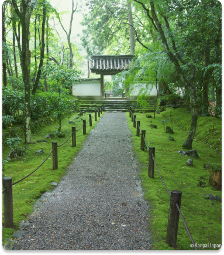

One day in my future life I would like to go to
Asian countries such as Korea, Vietnam or Japan, to make a road
trip and create memories. I think it's important to set goals in
life in order to move forward and even if we make mistakes it's
not serious.
"Man learns from his mistakes and the wiser man learns from the mistakes of others" Confucius

Moral of the trip
Travelling makes us discover the world, new cultures and gives
us an open mind. During a trip we can learn about ourselves
and discover that we are not made for the life we have now,
for example we can visit a country and realize that we want
to leave everything to live there because it suits us better.
Presentation of the place and the Jizos
The place I would like to talk about is a bamboo temple with jizo
statuettes, this place is located in the city of Kyoto in Japan.
I chose this place first of all because it is in Japan and it is
a country that I would like to visit later with my family or
friends but also because I read in this year 2022 a manga which
is called who Jizo and it has enormously more and learned me
on the subject of the jizo
Statue of Jizos
The Jizo are stone statues that are the guardians and protectors
of the weak, especially children who died at birth, those who
died young and travelers
This manga tells the story of a young boy who finds himself alone
in a park, he will meet another little boy who introduces himself
as jizo but without saying who he really is. Throughout the story,
we follow the adventure of the two boys who try to escape a
woman who catches lost children.